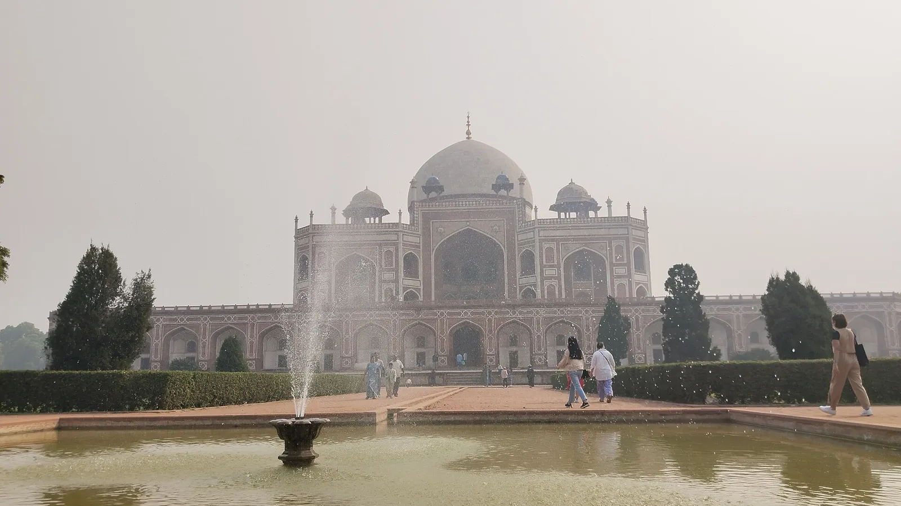
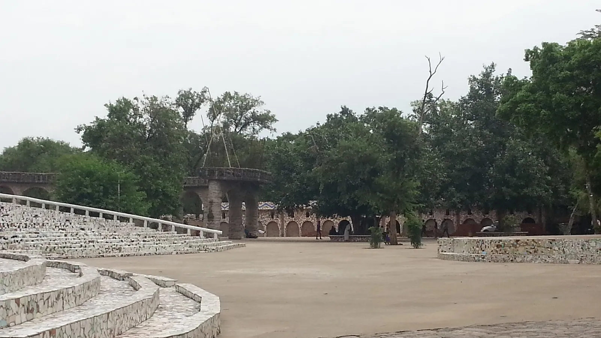
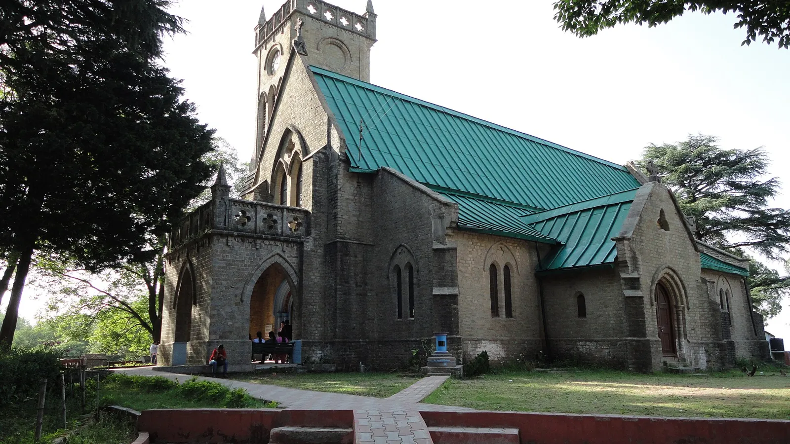
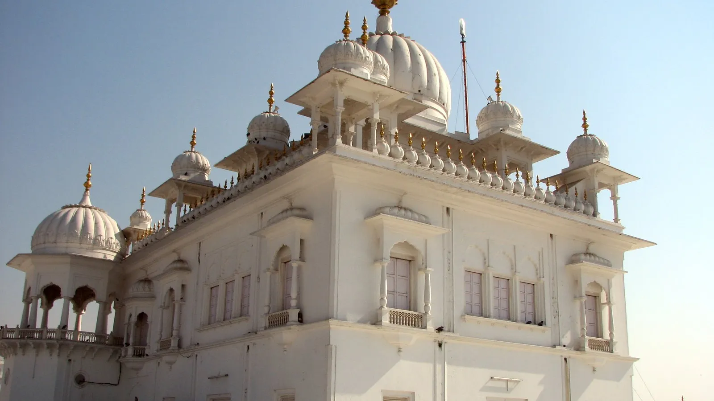
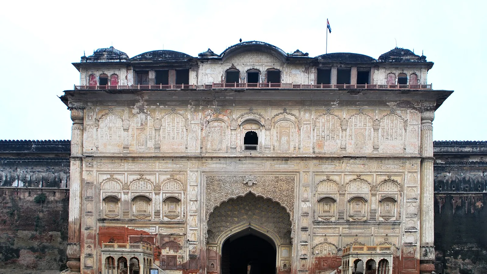
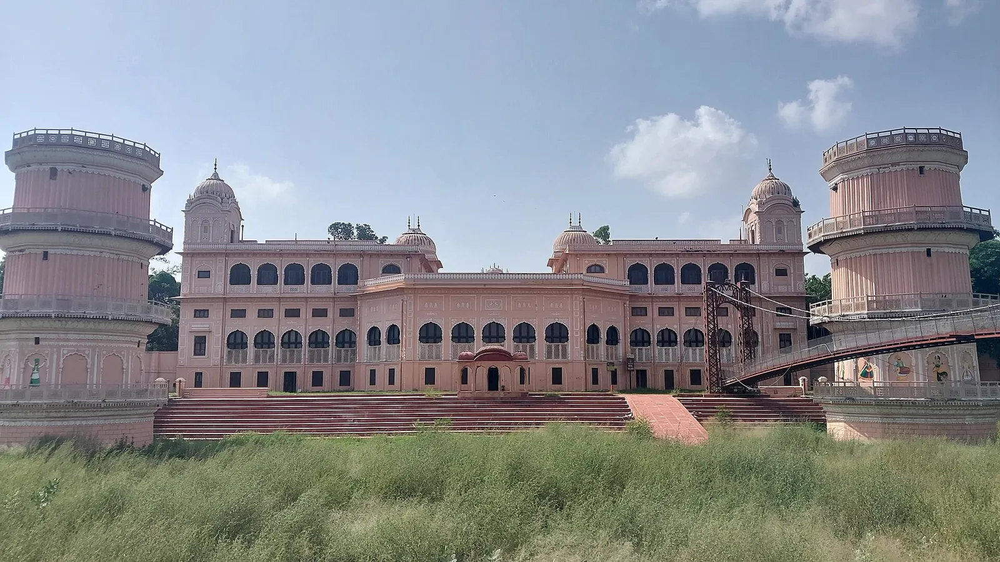
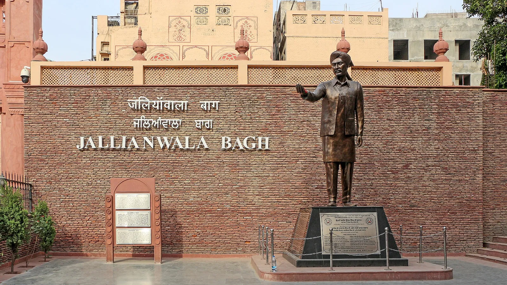
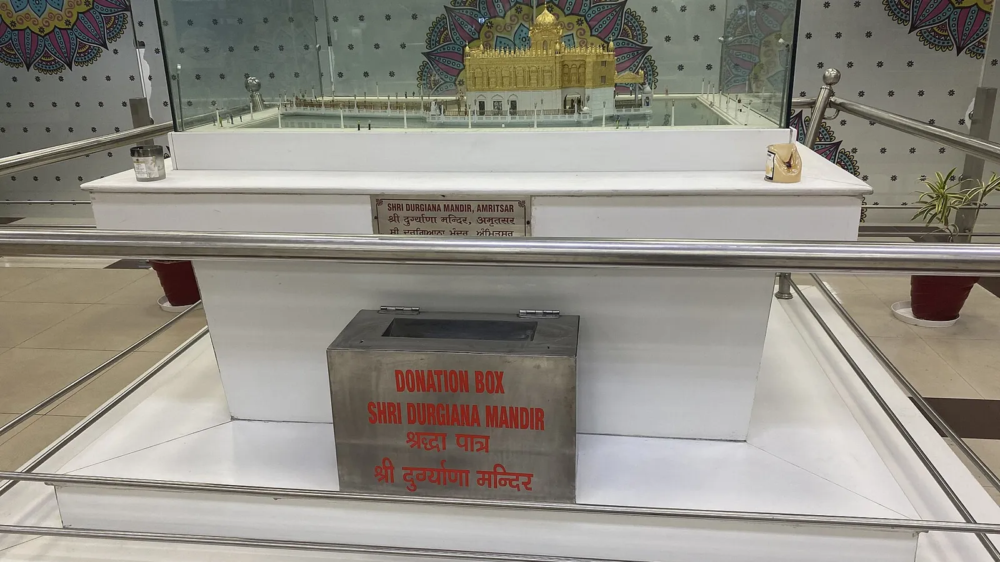
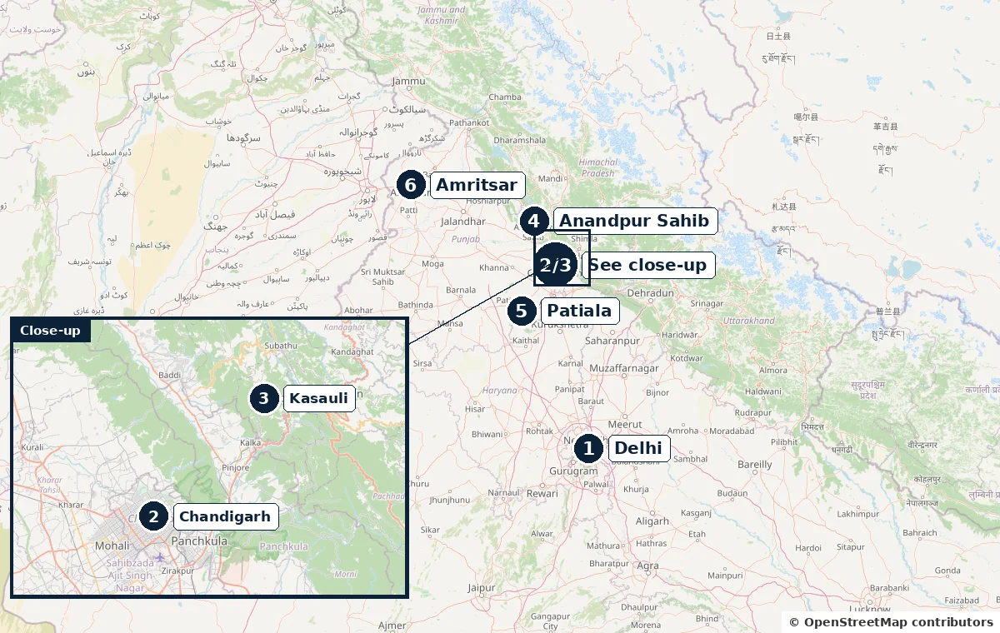

Spiritual Punjab with a breath of hill air. Delhi, Le Corbusier's Chandigarh, the quiet hill station of Kasauli, the Khalsa birthplace at Anandpur Sahib, the royal city of Patiala and the Golden Temple. This itinerary is built from our nights-per-place outline; the day plans, timings and changes are ours. Amritsar deserves two nights: one night leaves no time for the Partition Museum and the border.
See it for yourself
Photos from the journey










Where you go
The journey on one map

Day by day, in short
Daily travel brief
Distances are by road for the whole day. The full plan with timings comes with your detailed itinerary.
-
1
Arrive in Delhi
- Evening at Gurdwara Bangla Sahib.
-
2
Old Delhi and its gurdwaras
- Gurdwara Sis Ganj Sahib: cover your head; remove shoes.
- Old Delhi is best before noon.
-
3
-
4
Chandigarh, the planned city
- The Capitol Complex tour needs ID and runs on weekdays.
-
5
Up to Kasauli
- Kasauli is a cantonment: some roads are closed to private cars.
-
6
Monkey Point and the pine walks
- Monkey Point: inside an Air Force area: ID needed, phones and cameras are not allowed.
- Sunset Point is lovely in clear weather.
-
7
Anandpur Sahib, birthplace of the Khalsa
- Virasat-e-Khalsa museum: closed on Mondays.
- Hola Mohalla in March is the town's great festival.
-
8
To royal Patiala
- Buy a Patiala salwar and juttis in Adalat Bazaar.
-
9
Sheesh Mahal and Gurdwara Dukh Niwaran Sahib
- Tomorrow's drive to Amritsar is about 4 hours.
-
10
Amritsar and the Golden Temple
- Golden Temple and the Palki Sahib ceremony: cover your head, remove shoes and socks.
- Add a night for the Partition Museum and the Attari border ceremony.
-
11
Fly home from Amritsar
- Transfer to the airport: leave 4 hours before an international flight and 3 before a domestic one.
- Pack liquids and souvenirs in checked baggage.
Local know-how
Travel hacks from our desk
UPI, cards and cash
UPI works almost everywhere, even at small stalls. Keep some cash in INR 100 and 200 notes for temples, parking, tips and places where the network is weak.
Temple and shrine etiquette
Cover shoulders and knees. Remove shoes where asked, and carry socks for hot stone floors. Leather belts and bags are not allowed inside some Jain and Hindu temples. Ask before photographing people and inside shrines.
Water and street food
Drink sealed bottled or filtered water only. Choose busy stalls where food is cooked in front of you, and skip cut fruit and ice from roadside stalls.
Driving times
Indian roads are slower than the kilometres suggest: plan on 40 to 50 km an hour on highways and much less in hills and towns. Your driver's breaks and meal stops are built into the timings.
Plugs and tipping
Plugs are Indian three-pin and two-pin, 230 volts. Tipping drivers and guides about INR 300 to 500 a day is appreciated.
When to go
Best time to visit for this journey
March, for Hola Mohalla at Anandpur Sahib, or November.
October to March. Delhi and Punjab are foggy in late December and January, which can delay trains.
The package
What's included
Included
- Hotels as listed with breakfast
- Private air-conditioned car with driver for all transfers and sightseeing
- 24/7 support from Blue Diamond Voyage
- Delhi to Chandigarh train
Not included
- Flights and trains not listed as included
- Entry fees, guides, boats and activities
- Lunches and dinners unless stated
- Travel insurance
The detailed itinerary
Some journeys are planned. Ours are crafted.
The full 11-day plan is ready: hour-by-hour timings, drive times, temple dress codes, food for your diet and a route map for every day. Tell us your dates and your city, and we'll send it to you on WhatsApp, shaped around you.
- Hour-by-hour timings
- A route map for every day
- Hotel and room details
- Visa and entry steps
- Vegetarian and Jain dining
24/7 travel desk+91 97148 59797+91 98242 21400
Photo and map credits
- Indira Gandhi International Airport: Wasiul Bahar, CC BY-SA 4.0, via Wikimedia Commons
- Red Fort: Jakub Hałun, CC BY-SA 4.0, via Wikimedia Commons
- Humayun's Tomb: Komal Sambhudas, CC0, via Wikimedia Commons
- Rock Garden Chandigarh: Ijon, CC BY-SA 4.0, via Wikimedia Commons
- Christ Church Kasauli: Suman Wadhwa, CC BY-SA 3.0, via Wikimedia Commons
- Takht Sri Kesgarh Sahib: Jasleen Kaur, CC BY-SA 2.0, via Wikimedia Commons
- Qila Mubarak Patiala: Journojp, CC BY-SA 4.0, via Wikimedia Commons
- Sheesh Mahal Patiala: Keshuseeker, CC BY-SA 4.0, via Wikimedia Commons
- Jallianwala Bagh: Bernard Gagnon, CC BY-SA 4.0, via Wikimedia Commons
- Sri Guru Ram Dass Jee International Airport: Immanuelle, CC BY 4.0, via Wikimedia Commons
- Maps: © OpenStreetMap contributors; road routes by OSRM.